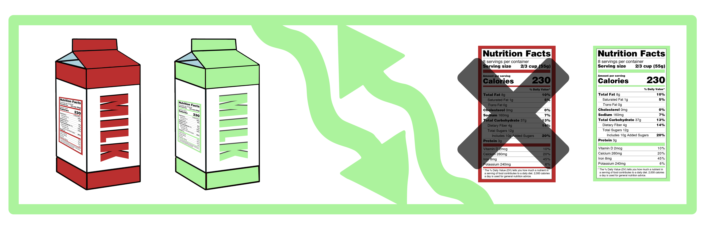

Business Plan: Kumpi?

Kumpi? means Which one? in English and is a tool for any grocery shopper. Kumpi? helps you decide between different products in the same category. Kumpi? accounts for the nutritional information and pricing of a product and tells you which food to buy. Kumpi? can work either as a website or a mobile application. However, the ultimate goal of Kumpi? is for it to seamlessly work as an easy-to-use application, enabling users to use effortlessly use it while grocery shopping.
Kumpi? focuses on the Finnish market at first. The approach is realistic and enables Kumpi? to benchmark its target audience and demand in the market before expanding abroad. In the example below, Kumpi? compared too similar milk cartions and helps the user decide which one is the right one for them.
